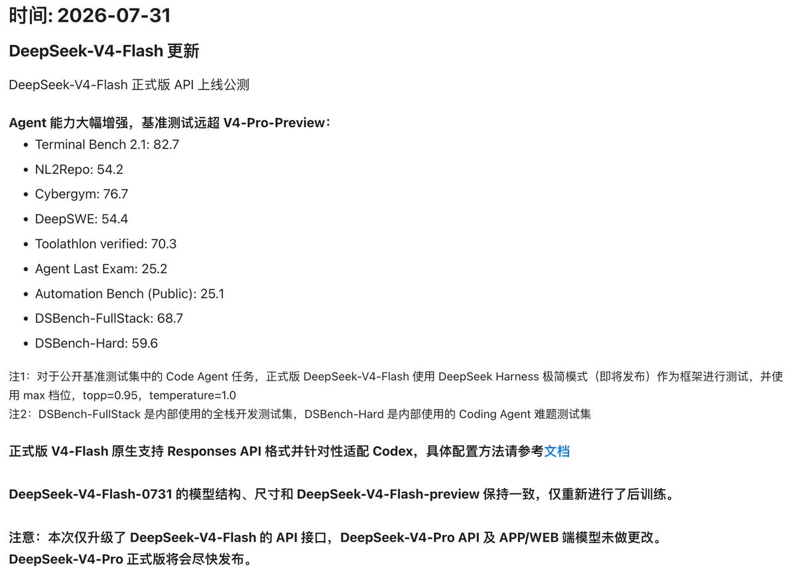
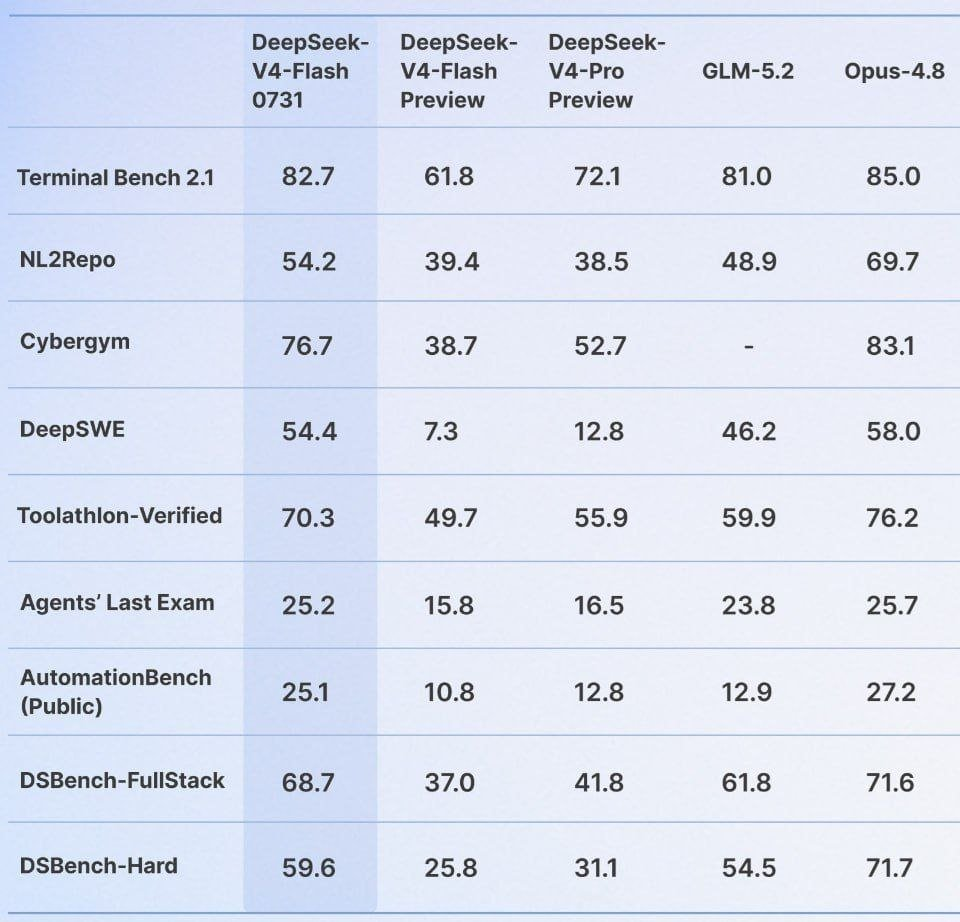
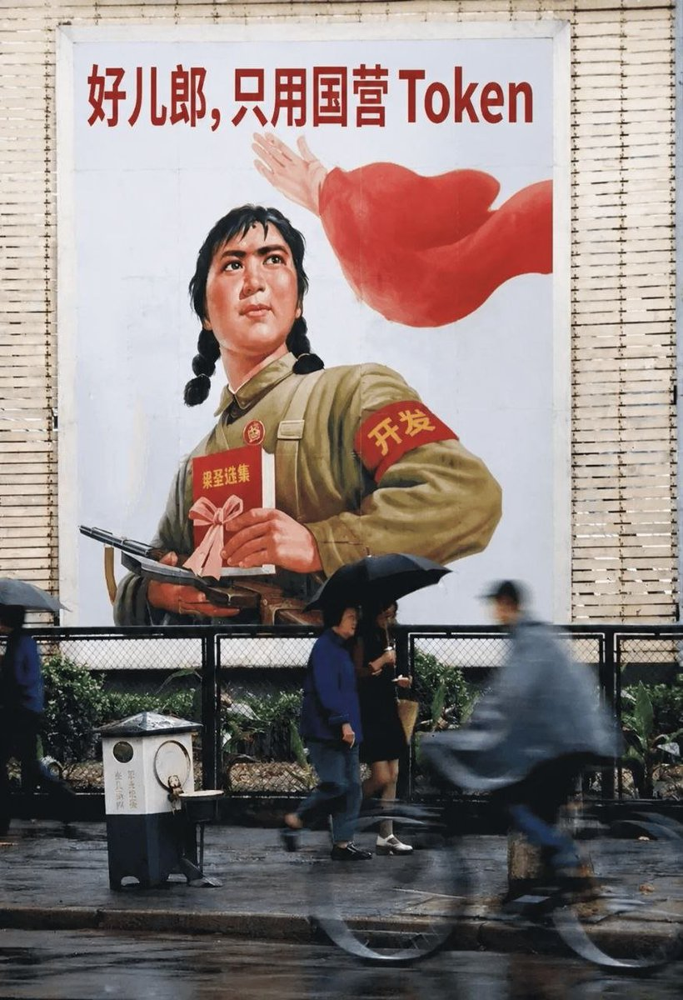

DPSK好像不涨价了，估计等正式版一起，现在涨价通知藏到充值页面了
奥特曼老师，这些日子你天天发推，不断提出一个又一个新点子，我有点接受不了。我想问一下，你究竟还执行不执行Tibo老师的路线？究竟还要不要高举闭源模型的旗帜？Tibo老师的token大重置的理论还算数不算数？
声明：本人从未在互联网上诋毁过深度求索，本人实际上是深度求索一年老粉，经过长时间的思考，我发现深度求索才是中国AI的希望，有时候做出决定很难，经过许多个日夜的思考，我决定加入深度求索粉丝团。至于智谱，祝他们的GLM6.0一切顺利。本人从未诋毁过深度求索，也从未称呼梁总为牢梁，望周知！
奥特曼老师，这些日子你天天发推，不断提出一个又一个新点子，我有点接受不了。我想问一下，你究竟还执行不执行Tibo老师的路线？究竟还要不要高举闭源模型的旗帜？Tibo老师的token大重置的理论还算数不算数？
声明：本人从未在互联网上诋毁过深度求索，本人实际上是深度求索一年老粉，经过长时间的思考，我发现深度求索才是中国AI的希望，有时候做出决定很难，经过许多个日夜的思考，我决定加入深度求索粉丝团。至于智谱，祝他们的GLM6.0一切顺利。本人从未诋毁过深度求索，也从未称呼梁总为牢梁，望周知！


